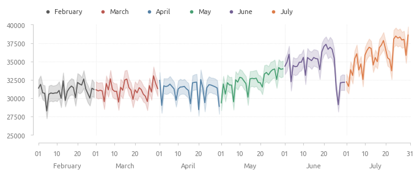

Стратегии бустинга авторегрессионной модели
Анализ и прогнозирование временных рядов - классические методы и машинное обучение
Ссылка на репозиторий
Профиль Github
Описание датасета

Содержание
Описание датасета
Исследование данных
Аномалии в данных
Базовая модель
Исследование модели
Наверх